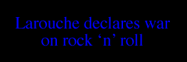
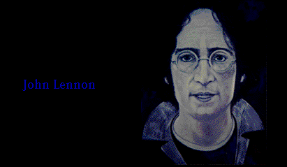

|  |
| |


If you thought Anslinger’s music craziness was over after he went after jazz in the 1930s and 40s, then consider this:
One of the chief organizations among the 4,000 or so “Families Against Marijuana” type groups today is Lyndon LaRouche’s “War on Drugs” committee, supported by Nancy Reagan, TV evangelists Jerry Falwell, Jimmy Swaggart, Pat Robertson, and other right-wing activists.
In January, 1981, this author and five members of the California Marijuana Initiative (CMI) secretly, by pretending to be pro-LaRouche, attended the West Coast convention of this organization, whose guest speaker was Ed Davis, former Los Angeles Police Chief, who was at that time a freshman state senator from Chatsworth, California.
As we each walked in separately, we were asked to sign a petition endorsing a Detroit reporter who had written an open letter to the new President, Ronald Reagan, asking him to give immediate presidential clemency and make a national hero of Mark Chapman, who had murdered John Lennon of the Beatles six weeks earlier.
The letter stated that John Lennon had been the most evil man on the planet because he almost single-handedly “turned on” the planet to “illicit drugs”. The evils of rock ‘n’ roll are a constant theme of the “War on Drugs” publications.

illustration © Michael M
To keep up with the part we were playing, we signed the petition. (John, forgive us—we were playing a clandestine role: under-cover CMI anti-narc. We remember you for “Give Peace a Chance,” “Imagine,” and all the rest.)
After we signed the petition, their leaders took us to the back of the room to show us some of the goals that would be achieved when they would come to full power over the next decade.
On five or so long tables set up in the back of the Los Angeles Marriott LAX meeting room were hundreds of recordings of Bach, Beethoven, Wagner, Chopin, Tchaikovsky, Mozart, and others, and dozens of pro-nuclear power publications.
They told us that along with new marijuana laws, they expected to implement their most important goal: anyone in the future who played disco, rock ‘n’ roll, or jazz on the radio, on television, in schools, or in concert, or just sold rock ‘n’ roll records or any other music that wasn’t from their approved classical lists, would be jailed, including music teachers, disc jockeys, and record company executives. School teachers, if they allowed such music by students, would be fired. (LA Times; KNBC-TV.)
They were dead serious.
Their magazine “War on Drugs” has always spent more space denouncing music with the “evil marijuana beat” than on heroin, cocaine, and PCP combined!
Ed Davis was genuinely shocked and embarrassed about this out-front aspect of their anti-music dogma and said, “Well, I don’t believe we could ever get legislation at this time outlawing these other types of music or their lyrics. … But I do believe with the new Reagan Law-and-Order Administration, we are going to be able to pass some new and stronger anti-marijuana paraphernalia laws, even recriminalizing marijuana altogether in the states that have decriminalization laws now. … That’s the start.”
I called his office a few days later and was told by an assistant that Davis had no advance idea of this group’s musical fixation and that he had accepted the invitation based solely on the name “War on Drugs”. Most of what Davis predicted that day has come about. Those visionaries of a new society, one free from the influence of pot and any mention of it had their way in the 1980s. Remember James Watt and the Beach Boys in 1986?
Since 1981, TV programs have been censored, cut, and pulled from the air for having a pro-marijuana connotation or even making jokes about it.
In an episode of “Barney Miller”, Detective Fish (Abe Vigoda) was told that some brownies he’d been eating all day were laced with pot. He looked forlorn for a moment, then said with a sigh, “Wouldn’t you know it, this is the best I ever felt in my life—and it’s illegal.” This episode has been pulled from distribution.
The late “screaming comic”, Sam Kinison, stood on the stage of NBC’s “Saturday Night Live” in 1986 and bellowed “Go ahead, you can have the cocaine! Just let us smoke our pot!” The line has been deleted from audio portion in subsequent re-runs.
The Reagan/Bush drug czar, Carlton Turner, from his position as the White House Chief Drug Advisor in the mid 1980s quoted to the press passages of The Rise and Fall of the Roman Empire and told police and interviewers that jazz musicians and rock singers were destroying the America he loved with their marijuana drug-beat music.
In 1997, in an episode of the TV series “Murphy Brown”, starring Candice Bergen, Murphy undergoes cancer treatment from which she is vomitting constantly and has lost her appetite. Finally she is told by her doctor to illegally use marijuana for nausea and appetite stimulation. Murphy smokes pot and she is saved by doing so.
The Partnership For a Drug Free America and DARE tried unsuccessfully to stop this episode from airing as it “…sent the wrong message to our children…” What wrong message!?…That marijuana is the best anti-nausea and the best appetite-stimulant on our planet and can save millions of lives?
the authorized on-line version of Jack Herer’s “The Emperor Wears No Clothes”
| previous page | Chapter 14 | next page |
|
 |
 |
 |
 |